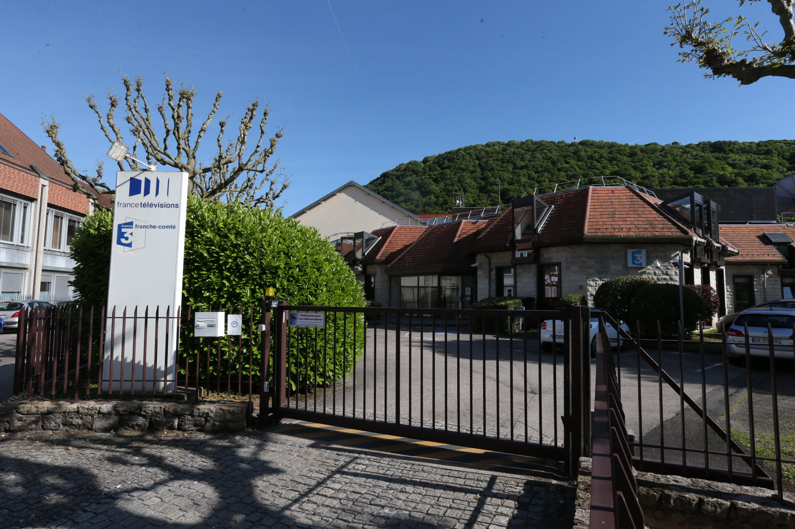
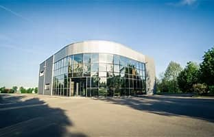
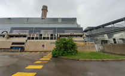
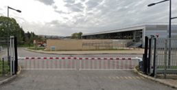
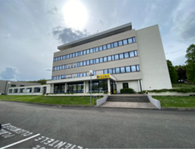

France 3
Afin que le collège m'aide à mieux m'orienter pour le futur, j'ai fait un stage d'observation chez France 3 au service de montage vidéo. J'ai pu découvrir les coulisses de l'organisation du journal télévision.█

Sous-Traitance et Services pour l'Industrie
Pour ma première année au lycée Jules Haag, j'ai entamé un stage de 6 semaines chez STS Industrie ou Sous Sous-Traitance et Services pour l'Industrie. j'ai eu l'opportunité de découvrir plusieurs services à STSI. Pour comprendre leurs objectifs, voici les missions que j'ai effectuées : Usinage des pièces avec les machines, Gravure des pièces, Procédure des machines, Dessin des machines, Assemblage des pièces. Ces missions m'ont permis de tester mes compétences informatiques, en écriture. Grâce à mes activités exécutées, j'ai pu apporter à l'entreprise la sécurité sur les machines, la production des pièces automobiles, les gravures des pièces.█

Engie Solutions Besançon
J'ai seulement fait une semaine de stage chez Engie Solutions Besançon, donc j'ai n'ai pu faire des activités dans l'entreprise mais plutôt des observations : J'ai observé la programmation pour leur site REDY process WIT. J'ai participé à des interventions dans des bâtiments. J'ai découvert la notion de Informatique Industriel, une base d'informatique qui s'occupe des machines. Même si l’entreprise où j’ai effectué mon stage n’est pas spécialisée dans l’informatique, j’ai pu connaître l’Informatique Industriel et le protocole de communication (HTTPS, HTTP, TCP). J’ai appris comment est distribué l’eau dans toute la ville.█

Keolis Besançon Mobilités
Afin de rattraper mes semaines de période de stage manquée, j'ai effectué un stage chez Keolis Besançon Mobilités. Durant mon stage, mon tuteur m’a confié des tâches d’installations de système d’exploitation, mettre à jour Windows, Lenovo, Intel, installé les périphériques et des applications. Grâce à mon stage, j’ai appris à connaître les micrologiciels, l’informatique industriel (OT pour Operationnal Technology), l’informatique technologique (IT pour Information Technology). J’ai acquis de nouvelles connaissances en matière de sauvegarde informatique comme : RAID (Redundant Array of Independent Disk), Redondances des données, NAS (Serveur de stockage en réseau).█

Kubapay
Enfin, pour finaliser les conditions d'accés aux examens du baccalauréat professionnel, j'ai fait un stage chez KubaPay pendant 11 semaines où j'ai effectué de nombreuses missions : assemblage de pièces pour plusieurs imprimantes de tickets, tester l'état des cartes Viper et des cartes Display avec à l'aide d'une box de test et du logiciel TeraTerm, remplacer le port bleu par un allongement d’antenne, remplacer la carte SAM dans les équipements d’impression de tickets et démontage des machines pour pouvoir sauvegarder les cartes électroniques et contribuer à l'économie de l'entreprise.
Je suis revenu chez KubaPay en 2026, pour terminer ma première année d'étude de BTS SIO1. Mon durée à durée 6 semaines, j'ai assisté à l'inventaire en classifiant les ressources dans les documents. J'ai mis à jour les données des lecteurs de cartes à l'aide du protocole FTP, FileZilla, et télécharger le soft client avec Tera Term et Day O Ugrade.█
